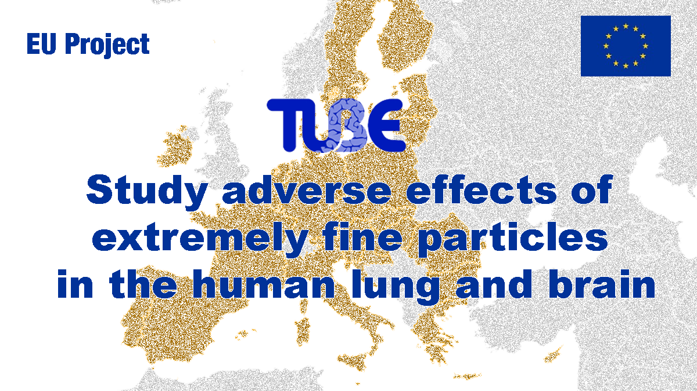
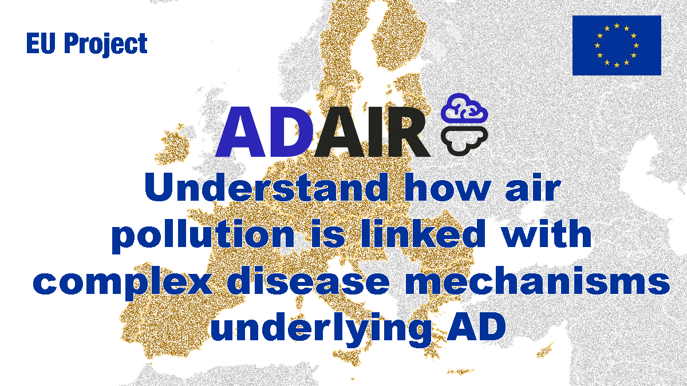
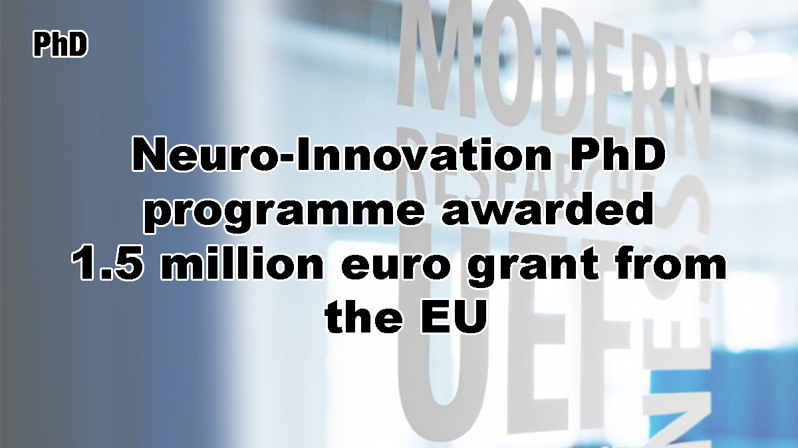
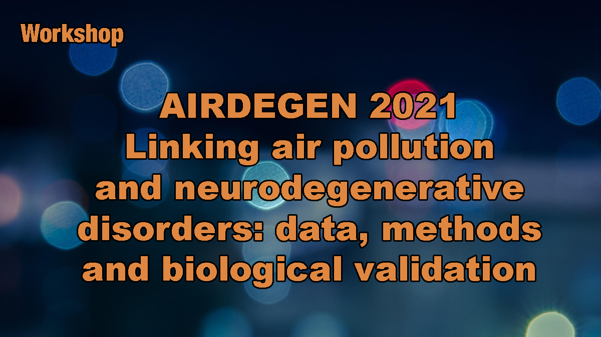
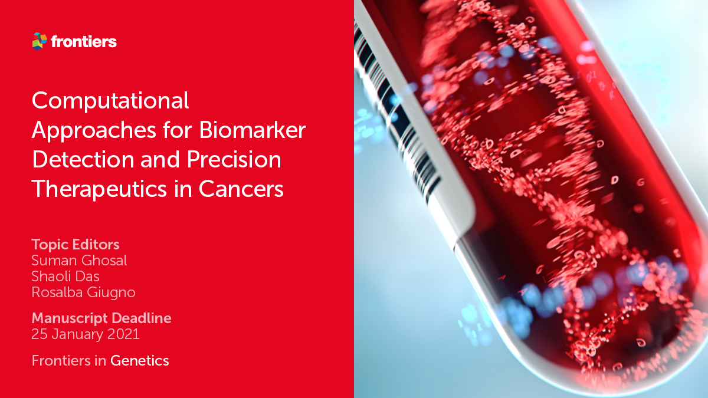

Projects

TUBE
There is an urgent need to understand the interplay of pollutants with
adverse effects in the brain, in order to steer political decision making
for efficient reduction of air pollutants. This could, in the long run,
reduce the economic burden caused by diseases associated with them. To
address this unmet need, the TUBE-project unites interdisciplinary expertise
to study these adverse effects of extremely fine particles (UFP’s) in the
human lung and brain. Leaning on this interdisciplinary approach and state
of the art research methodologies, TUBE will aim to discover the harmful
components of air pollution and identify biomarkers for early detection
of brain disease related to air pollution. This could improve brain health,
reduce the prevalence of brain diseases, provide significant economical
savings, and provide data that will be used to support planning future
traffic policy across the EU. Read more.

ADAIR
ADAIR applies a precision medicine approach to stratify individuals to
subgroups for risk estimation and future AD prevention, ultimately aiming
to target air pollution induced effects in those individualsthat can most
benefit from them. The project investigates the novel, ambitious hypothesis
that the pollutant exposure environment of an individual alters cellular
mechanisms and functions, resulting in the expression of measurable biomarkers.
By identifying biomarkers, the individuals with increased AD risk can be
stratified prior to the disease onset and preventive measures can be
targeted to the specific at-risk populations in order to be most effective.
The main objectives are to:
The main objectives are to:
- Discover biomarkers of air pollutant effects.
- Correlate biomarkers to AD risk to identify sub-groups of individuals with an increased susceptibility for air pollutant effects.
- Better understand how the exposure environment is linked with complex disease mechanisms underlying AD, thus paving the way for future therapeutic approaches.

Neuro-innovation PhD programme
The University of Eastern Finland has received EU funding to recruit
14 doctoral students into a four-year multidisciplinary Neuro-Innovation
PhD programme, which will be implemented on the Kuopio campus. The University
of Verona and Infomics research group are partners of the neuro-innovation PhD programme.
The Marie Skłodowska-Curie Cofund grant of 1,5 million euros will
increase the scope and quality of multidisciplinary research in the
UEF Neuroscience Research Community (NEURO). Thereby, it will also
generate a strong positive impact on health innovation in Finland and beyond.
The recruitment of the international PhD students will start in June 2021.
Read more.
More projects available here
Workshops & conferences

AIRDEGEN 2021
Despite decades of neurodegenerative disease (ND) research, the
real molecular pathophysiology of the disease is still poorly
understood, and treatments remain inadequate. Remarkably little attention
is paid to the involvement of environmental factors, which are known
from epidemiological studies to strongly impact ND development. Air
pollution, a massive public health issue known to pose a major threat
to human health, is an important, ever-increasing global concern. A
growing body of evidence from epidemiological and controlled animal
studies shows that exposure to air pollutants also impairs the brain.
Furthermore, living in highly polluted areas is associated with
exacerbated cognitive dysfunction and ND. Many questions remain
unanswered as mechanistic information on air pollutant effects on
the brain is scarce. Importantly, biomarkers for air pollution and
ND risk prediction do not currently exist, thus hindering the
identification and stratification of individuals at risk for harmful
air pollution effects.
This workshop aims to investigate the novel, ambitious hypothesis that the pollutant exposure environment of an individual alters cellular mechanisms and functions, resulting in the expression of measurable biomarkers. By identifying biomarkers, the individuals with increased ND risk can be stratified prior to the disease onset and preventive measures can be targeted to the specific at-risk populations in order to be most effective. Read more.
This workshop aims to investigate the novel, ambitious hypothesis that the pollutant exposure environment of an individual alters cellular mechanisms and functions, resulting in the expression of measurable biomarkers. By identifying biomarkers, the individuals with increased ND risk can be stratified prior to the disease onset and preventive measures can be targeted to the specific at-risk populations in order to be most effective. Read more.
MODIMO 2021
Multi-omics analysis aims at extracting previously uncovered biological
knowledge by integrating information across multiple single-omic sources.
Past approaches have focused on the simultaneous analysis of a small
number of omic data sets. Current challenges face the problem of integrating
multiple omic sources into a unified complex model, or of combining
already available tools for two-by-two omics analyses and merging their
outcomes. By doing so and leveraging integrated system-level knowledge,
multi-omic approaches ought to enable the development of better qualitative
and quantitative models for descriptive and predictive analyses. To
move this area forward, new statistical and algorithmic frameworks are
needed, for example for generalizing classical graph theory results to
heterogeneous networks, and applying them to diverse problems such as
drug repurposing or understanding the immune response to infections. Thus,
in short, this workshop aims at investigating novel methodologies for
providing crucial insights into multi-omics data management, integration,
and analysis in order to enable biological discoveries.
Read more.
ICHI 2021
Editing

Biomarker detection in Cancer
This Research Topic aims to explore recent advances in computational
techniques used to harness large-scale cancer genomic and clinical data
for biomarker detection or precision therapeutic strategies. At the
same time, our goal is keeping the focus on clinical relevance and
attempting to bridge the gap between computational and clinical research.
Computational approaches used for biomarker detection, therapeutic
response prediction, drug repurposing, and identifying effective drug
combination therapies will be discussed within this topic. Particularly,
detection of cancer patients with aggressive vs non-aggressive phenotypes,
or patients who may benefit from certain targeted therapies or immunotherapies,
using molecular markers will be of interest.
Read more.
Startup

HTLab - Healthcare Technology Lab
HTLab (Healthcare Technology Lab) is an innovative startup founded
on November 6, 2019, owned by vEyes (virtual Eyes) - ONLUS. Despite
his young age, thanks to the skills, the laboratories, the infrastructures
and the network with the clinical and technological realities that revolve
around vEyes, HTLab has already been among the winners of the third open
call launched by the FLAME project (H2020, grant agreement no. 731677).
Read more.